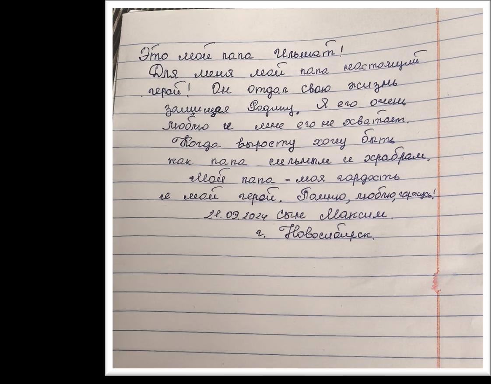

История героя · Донецкая Народная Республика
НАШ ОТЕЦ ИГОРЬ
Фотография из архива

История собрана из писем двоих детей, семейных фотографий и детского рисунка.
Личности на снимках редакцией не устанавливались; подписи появятся после подтверждения семьёй.
Письма



Требует проверки. В этом письме читается имя отца, не совпадающее с титулом истории, и подпись другого автора. До выяснения по оригинальным материалам письмо не будет опубликовано в этой истории (редакционный вопрос eq-009).
Семейный архив


Детский рисунок

Рисунок из архива семьи: папа в форме под флагом России.
Авторство рисунка будет указано после подтверждения семьёй.